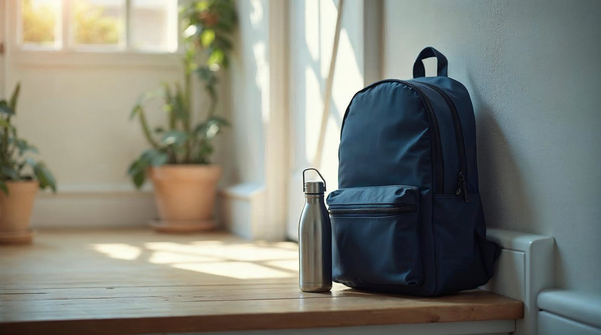
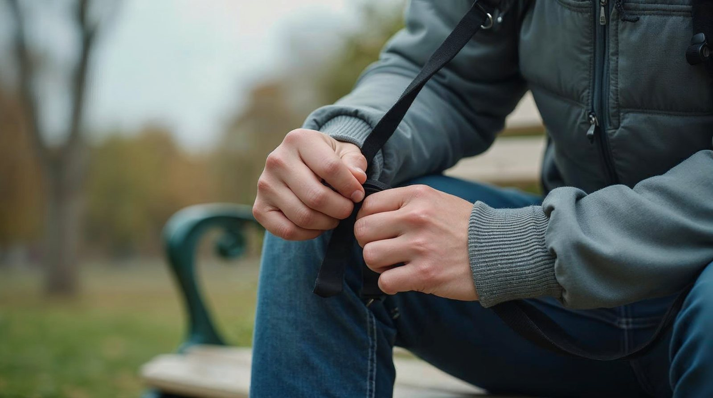
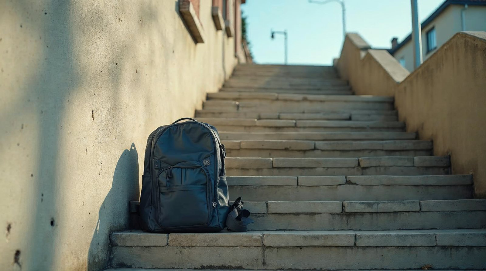

이종호 한의사 감수좋은꿈참사랑한의원 대표원장 (한의사 면허번호 19769)발행 2026-11-24 · 수정 2026-11-26
이 글의 차례
- 왜 이런 불편이 생길 수 있나요
- 왜 오르막에서는 같은 가방도 더 무겁게 느껴질까요
- 비슷해 보여도 살필 점이 조금씩 다릅니다
- 먼저 이렇게 여쭙니다
- 상황별 예시
- 스스로 점검해 보세요
- 일상에서 먼저 해 볼 수 있는 것
- 가방은 이렇게 함께 정리해 보세요
- 집에서 함께 할 수 있는 동작
- 보호자가 집에서 살펴볼 수 있는 모습
- 키가 크는 시기에는 이런 점도 봅니다
- 운동과 놀이는 계속해도 괜찮을까요?
- 책상 자세와 잠도 함께 봅니다
- 학교와 학원에 함께 여쭤볼 수 있는 것
- 통학길도 한번 살펴보세요
- 한의원에서 함께 살필 수 있는 경우
- 얼마나 지켜보고 언제 상담할까요
- 이렇게 기록해 오시면 상담이 쉬워집니다
- 이런 증상은 먼저 확인이 필요합니다
아이가 무거운 가방 때문에 어깨와 허리가 아프다고 한다면, 매일 필요 없는 책을 빼 무게를 줄이고 양쪽 어깨로 등에 붙여 메게 하는 것부터 시작하시길 권합니다. 상도동처럼 언덕길이 많은 동네에서는 학교와 학원을 오가는 길에 가방 무게가 더 크게 느껴질 수 있습니다.
아이들은 아픈 곳을 정확하게 말하기 어려워 "그냥 어깨가 아파", "등이 이상해"처럼 뭉뚱그려 이야기하곤 합니다. 그래서 아이 말 한마디에 너무 놀라기보다, 언제 어디가 아픈지를 며칠 지켜보며 차근차근 살피는 것이 먼저입니다.
왜 이런 불편이 생길 수 있나요
- 가방을 한쪽 어깨로 메면 몸이 한쪽으로 기울어 어깨와 허리 한쪽에 부담이 몰립니다.
- 가방이 엉덩이 아래로 처지면 몸을 앞으로 숙이게 되어 허리가 더 버팁니다.
- 오르막에서는 가방 무게를 버티느라 목과 어깨에 힘이 더 들어갑니다.
- 키가 크는 시기에는 근육과 뼈의 균형이 빠르게 바뀌어 불편을 더 느끼기도 합니다.
왜 오르막에서는 같은 가방도 더 무겁게 느껴질까요
평지에서는 가방 무게가 등 뒤에서 아래로만 걸리지만, 오르막에서는 몸을 앞으로 숙이며 올라가기 때문에 가방이 뒤로 끌어당기는 힘까지 버텨야 합니다. 아이는 이 힘을 목과 어깨를 앞으로 내밀며 버티게 됩니다.
가방 끈이 길어 가방이 엉덩이 쪽으로 처져 있으면 뒤로 당기는 힘이 더 커집니다. 그래서 같은 무게라도 끈을 조여 등에 붙인 가방과 늘어뜨린 가방은 아이가 느끼는 무게가 꽤 다릅니다.
하교 시간에는 하루 종일 앉아 있느라 몸이 굳어 있고 배도 고픈 상태라 버티는 힘이 아침보다 떨어집니다. 아이가 주로 하교 뒤에 아프다고 한다면 이런 흐름이 겹쳐 있을 수 있습니다.
비슷해 보여도 살필 점이 조금씩 다릅니다
- 어깨 위쪽과 목 뒤가 뻐근하다고 하는 경우에는 가방 끈이 어깨를 누르는 위치와 오르막에서 고개를 내미는 습관을 봅니다.
- 날개뼈 사이 등 가운데가 아프다고 하는 경우에는 가방 무게와 함께 책상에서 고개를 숙이는 시간도 여쭙습니다.
- 허리 아래쪽이 아프다고 하는 경우에는 가방이 처진 정도와 운동이나 놀이 중 넘어진 일이 있었는지 확인합니다.
- 한쪽만 아프다고 하는 경우에는 가방을 메는 쪽, 보조 가방을 드는 손, 자는 자세가 한쪽으로 치우쳐 있는지 봅니다.
- 다리가 아프다고 하면서 낮에는 잘 뛰어노는 경우에는 키가 크는 시기의 성장통과 겹쳐 있는지도 함께 살핍니다.

먼저 이렇게 여쭙니다
- 가방 무게가 어느 정도인가요? 체중계로 한번 재 보셨나요?
- 가방을 양쪽 어깨로 메나요, 한쪽으로 메나요?
- 아프다고 하는 때가 하교 후인가요, 아침인가요?
- 운동하거나 뛰어놀 때도 아파하나요?
- 아이가 하루에 오르내리는 언덕이나 계단이 많은가요?
- 학원 가방이나 보조 가방을 따로 들고 다니나요?
- 집에서 숙제하거나 휴대폰을 볼 때 주로 어떤 자세인가요?
상황별 예시
- 예를 들어 비 오는 날 우산까지 들고 가방을 한쪽 어깨에 걸친 채 언덕을 오르는 아이의 경우, 그날 저녁 한쪽 어깨만 뻐근하다고 하기 쉽습니다. 비 오는 날에는 가방 커버를 씌워 양쪽으로 메게 하고, 우산은 가벼운 것으로 골라 주세요.
- 예를 들어 태권도나 축구 같은 운동 가방을 학교 가방과 함께 드는 아이의 경우, 운동 가방을 한쪽 어깨에 메면서 몸이 비틀리기 쉽습니다. 운동 용품은 학원에 두거나 보호자가 데려다줄 때 따로 챙기는 방법을 찾아보세요.
- 예를 들어 학교가 끝나고 집에 들르지 않고 바로 학원으로 가는 아이의 경우, 학교 가방에 학원 교재까지 한꺼번에 넣어 저녁까지 메고 다니게 됩니다. 학원 교재는 학원에 두는 방법이 있는지 알아보거나, 요일별로 필요한 교재만 챙기도록 시간표를 함께 붙여 두세요.
- 예를 들어 체육복과 실내화 주머니를 손에 들고 언덕을 오르는 아이의 경우, 한 손에 무게가 몰려 몸이 한쪽으로 기울기 쉽습니다. 작은 짐은 가방 안이나 양손에 나눠 들게 하고, 체육복은 그날 아침에만 챙기도록 해 보세요.
- 예를 들어 가방을 멋있게 메려고 끈을 길게 늘어뜨리는 고학년 아이의 경우, 보호자 말보다 친구들 모습이 더 중요할 때가 많습니다. 왜 끈을 조여야 하는지 아이에게 직접 설명해 주고, 가방을 메고 거울 앞에서 옆모습을 함께 보는 것도 방법입니다.
- 예를 들어 새 학기에 교과서를 모두 받아 온 첫 주에 아프다고 하는 경우, 사물함 사용이 익숙해지면 가방 무게가 저절로 줄어드는 일도 많습니다. 몇 주 지켜보며 가방 무게가 어떻게 달라지는지 확인해 보세요.
스스로 점검해 보세요
- 아이 가방을 들어 보면 생각보다 묵직하다
- 가방을 한쪽 어깨에만 걸치고 다닌다
- 가방 아래쪽이 엉덩이보다 아래로 처져 있다
- 언덕을 오를 때 고개를 앞으로 쭉 내밀고 걷는다
- 가방 끈 자국이 어깨에 빨갛게 남아 있다
- 한쪽 어깨가 다른 쪽보다 올라가 보인다
- 숙제할 때 책상에 엎드리듯 고개를 숙인다
- 학원 가방이나 운동 가방을 한쪽 어깨에 따로 멘다
해당하는 항목이 많다면 가방 정리와 메는 법, 책상 자세부터 함께 바꿔 볼 신호입니다.

일상에서 먼저 해 볼 수 있는 것
- 매일 필요 없는 책과 물건은 학교 사물함이나 집에 두기
- 가방은 양쪽 어깨로 메고 끈을 조여 등에 붙이기
- 무거운 책은 등 쪽에 가깝게 넣기
- 저녁에 어깨를 돌리고 가슴을 펴는 동작을 함께 하기
- 가방 끈 길이를 맞춰 가방 아래쪽이 허리 위에 오게 하기
가방은 이렇게 함께 정리해 보세요
일요일 저녁이나 매일 자기 전에 아이와 함께 가방을 열어 보세요. 다 쓴 학습지, 지난주 가정통신문, 먹다 남은 간식처럼 생각보다 쓸모없는 물건이 꽤 나옵니다.
시간표를 가방 옆에 붙여 두고 다음 날 필요한 교과서만 넣는 습관을 들이면, 아이 스스로 무게를 덜어 내는 방법을 익히게 됩니다. 처음에는 보호자가 함께하고 점점 아이에게 맡기면 좋습니다.
가방을 고를 때는 어깨끈이 넓고 푹신한지, 등판이 몸에 닿는 면이 단단한지, 가슴 앞에서 채우는 끈이 있는지 확인해 보세요. 가슴 끈을 채우면 어깨끈이 바깥으로 벌어지지 않아 무게가 더 고르게 나뉩니다.
물통은 가방 옆 주머니보다 등 쪽 안쪽에 넣으면 무게가 한쪽으로 쏠리지 않습니다. 물은 학교에서 채울 수 있다면 집에서는 반만 채워 가는 것도 방법입니다.
집에서 함께 할 수 있는 동작
저녁에 아이와 함께 어깨를 뒤로 천천히 다섯 번 돌리고, 두 팔을 뒤로 깍지 껴 가슴을 펴는 동작을 해 보세요. 놀이처럼 함께하면 아이도 부담 없이 따라 합니다.
벽에 등을 대고 서서 뒤통수, 어깨, 엉덩이가 벽에 닿는지 확인하는 놀이도 좋습니다. 아이가 스스로 바른 자세를 몸으로 느껴 볼 수 있습니다.
동작 중에 아이가 아파하면 바로 멈추세요. 억지로 늘리기보다 시원한 정도에서 그치는 것이 좋고, 맞는 동작은 진료 때 아이 몸을 보고 함께 정해 드립니다.
보호자가 집에서 살펴볼 수 있는 모습
아이가 가방을 멘 채 집 앞 언덕을 오르는 모습을 한 번 뒤에서 지켜보세요. 몸이 한쪽으로 기우는지, 고개가 앞으로 쭉 나오는지, 가방이 좌우로 흔들리는지 보면 가방 무게와 메는 법이 맞는지 짐작할 수 있습니다.
목욕할 때나 옷을 갈아입을 때 아이 등을 보며 양쪽 어깨 높이와 날개뼈 모양이 비슷한지도 살펴보세요. 아이에게 허리를 앞으로 천천히 숙이게 하고 뒤에서 보면 등의 높이가 고른지 보기가 더 쉽습니다.
아이가 아프다고 할 때는 "어디가 아파?" 하고 손가락으로 짚어 보게 해 주세요. 아이가 가리킨 자리와 그날 한 일을 함께 적어 두면, 진료 때 아이가 기억하지 못하는 부분을 채워 줄 수 있습니다.
키가 크는 시기에는 이런 점도 봅니다
초등학교 고학년부터 중학생 무렵에는 키가 갑자기 크면서 뼈가 자라는 속도를 근육이 따라가지 못해 몸이 뻣뻣해지기 쉽습니다. 이 시기에 무거운 가방까지 더해지면 어깨와 허리가 더 쉽게 뭉칩니다.
이때는 무리하게 근력을 키우기보다 자주 몸을 움직이고 늘려 주는 것이 도움이 됩니다. 쉬는 시간에 교실 밖으로 나가 걷기, 저녁에 가볍게 스트레칭하기처럼 작은 습관부터 시작해 보세요.
잘 먹고 잘 자는 것도 몸이 자라는 시기에 중요합니다. 아침을 거르거나 늦게 자는 날이 많다면 그 리듬도 함께 살펴보시길 권합니다.
운동과 놀이는 계속해도 괜찮을까요?
가방 때문에 어깨가 뻐근한 정도라면 뛰어놀기와 운동은 오히려 몸을 풀어 주는 데 도움이 되는 경우가 많습니다. 줄넘기, 수영, 자전거처럼 몸 전체를 고르게 쓰는 활동을 권합니다.
다만 특정 동작을 할 때마다 같은 자리가 아프다고 하거나, 운동 뒤 아픈 날이 늘어난다면 잠시 강도를 줄이고 진료 때 그 동작을 알려 주세요. 어떤 동작에서 아픈지 알면 살필 곳이 좁혀집니다.
책상 자세와 잠도 함께 봅니다
가방 무게만큼 아이 어깨와 허리에 영향을 주는 것이 책상 앞에서 보내는 시간입니다. 책상이 너무 높거나 의자가 낮으면 어깨가 들리고, 반대면 몸이 앞으로 굽어집니다.
발이 바닥에 닿지 않는다면 발 받침을 놓아 주시고, 화면이나 책은 눈높이에 가깝게 올려 주세요. 휴대폰을 누워서 보는 습관도 목과 어깨에 부담을 더합니다.
잠이 부족하면 근육이 하루의 피로를 덜 풀고 다음 날을 맞게 됩니다. 학원 숙제로 잠드는 시간이 늦어지고 있다면 그 부분도 함께 살펴보시길 권합니다.
학교와 학원에 함께 여쭤볼 수 있는 것
사물함이 있는데도 아이가 쓰지 않는 경우가 꽤 있습니다. 자물쇠를 잃어버렸거나 자리가 모자라서일 수도 있으니, 아이에게 사물함을 어떻게 쓰는지 물어보고 필요하면 담임 선생님께 여쭤보세요.
학원 교재가 두껍다면 학원에 교재를 두고 다닐 수 있는지, 숙제할 부분만 따로 들고 다닐 수 있는지 상의해 볼 수 있습니다. 작은 부탁 하나로 매일 메는 무게가 꽤 줄어들기도 합니다.
통학길도 한번 살펴보세요
같은 학교라도 가는 길에 따라 오르막 길이와 경사가 다릅니다. 몇 분 더 걸리더라도 경사가 완만한 길이 있다면 가방이 무거운 요일만이라도 그 길로 다니게 해 보세요.
아침에 늦어 언덕을 뛰어오르는 날이 많다면 10분만 일찍 나서도 몸에 들어가는 힘이 달라집니다. 뛰어오르면 가방이 위아래로 흔들려 어깨와 허리에 충격이 더 쌓입니다.
친구와 함께 걸어가며 이야기를 나누면 아이도 걸음 속도가 자연스럽게 느려집니다. 서두르지 않고 걷는 시간이 아이 몸에는 쉬는 시간이 되기도 합니다.

한의원에서 함께 살필 수 있는 경우
- 아이가 어깨나 허리 통증을 반복해서 이야기하는 경우 자세와 척추 균형을 함께 살핍니다.
- 한쪽 어깨 높이가 달라 보이는 경우 생활 습관과 함께 살핍니다.
- 잠이나 식사 리듬이 흔들리는 경우 생활 전반을 이어서 여쭙니다.
좋은꿈참사랑한의원에서는 아이도 모든 분처럼 맥부터 짚으며, 보호자와 함께 아이의 하루 일정과 가방 메는 습관을 여쭙습니다. 아이 눈높이에서 천천히 설명하며 어깨와 허리, 걷는 모습을 살피고, 필요하다고 판단될 때 침 등 아이에게 맞는 방법을 정합니다. 귀가 전에는 가방 정리법과 집에서 함께 할 동작을 알려 드립니다.
진료실에서는 아이가 낯설어하지 않도록 먼저 학교와 좋아하는 놀이 이야기를 나누고, 무엇을 할지 하나씩 설명한 뒤 진찰합니다. 아이가 긴장하면 보호자 곁에 앉아서 진행해도 괜찮습니다.
첫 방문 때는 아이가 서 있는 모습을 앞과 옆, 뒤에서 보고 앞으로 숙였을 때 등 높이가 고른지도 살핍니다. 어깨 높이 차이가 계속 눈에 띄거나 등 모양이 걱정된다면 정형외과 검사를 함께 안내합니다. 다시 오시면 가방 무게를 바꾼 뒤 아이가 아프다고 한 날이 줄었는지부터 이어서 여쭙습니다.
얼마나 지켜보고 언제 상담할까요
- 가방 정리와 메는 법을 바꾼 뒤 2~3주는 아이가 아프다고 한 날을 달력에 표시하며 지켜보세요.
- 가방을 가볍게 해도 아프다는 말이 줄지 않거나, 한쪽 어깨 높이 차이가 계속 눈에 띈다면 상담을 권합니다.
- 아이가 아파서 좋아하던 운동이나 놀이를 피하기 시작한다면 기다리기보다 진료를 받아 보세요.
- 가방을 바꾼 뒤 아프다는 말이 줄었다면 그 습관을 이어 가되, 새 학기나 학원이 늘어나는 시기에는 가방 무게를 다시 한번 재 보세요.
- 형제자매가 같은 길로 다닌다면 동생 가방도 함께 확인해 보세요. 어린 아이일수록 몸무게에 비해 가방이 무거워지기 쉽습니다.
이렇게 기록해 오시면 상담이 쉬워집니다
- 가방 무게(체중계로 재 보기)
- 아프다고 한 날과 시간
- 아이가 가리킨 아픈 위치
- 운동이나 놀이 중에도 아팠는지
- 요일별 시간표와 학원 일정
- 가방을 메고 걷는 아이의 옆모습 사진
- 집에서 함께 한 동작과 그 뒤 아이가 한 말
이런 증상은 먼저 확인이 필요합니다
- 통증 때문에 밤에 잠을 깨거나 아침에도 계속 아파하는 경우
- 등이나 허리가 아프면서 열이 나는 경우
이런 신호가 있으면 한의원보다 가까운 병원이나 응급실을 먼저 찾으세요.

여쭙는 것
- 가방 무게가 어느 정도인가요? 체중계로 한번 재 보셨나요?
- 가방을 양쪽 어깨로 메나요, 한쪽으로 메나요?
- 아프다고 하는 때가 하교 후인가요, 아침인가요?
생활에서 해 볼 것
- 매일 필요 없는 책과 물건은 학교 사물함이나 집에 두기
- 가방은 양쪽 어깨로 메고 끈을 조여 등에 붙이기
- 무거운 책은 등 쪽에 가깝게 넣기
한의원에서 함께 살필 것
- 아이가 어깨나 허리 통증을 반복해서 이야기하는 경우 자세와 척추 균형을 함께 살핍니다.
- 한쪽 어깨 높이가 달라 보이는 경우 생활 습관과 함께 살핍니다.
- 잠이나 식사 리듬이 흔들리는 경우 생활 전반을 이어서 여쭙니다.
먼저 확인이 필요한 신호
- 통증 때문에 밤에 잠을 깨거나 아침에도 계속 아파하는 경우
- 등이나 허리가 아프면서 열이 나는 경우
한눈에 보는 표
| 구분 | 핵심 |
|---|---|
| 여쭙는 것 | 가방 무게가 어느 정도인가요? 체중계로 한번 재 보셨나요? 가방을 양쪽 어깨로 메나요, 한쪽으로 메나요? |
| 생활에서 해 볼 것 | 매일 필요 없는 책과 물건은 학교 사물함이나 집에 두기 가방은 양쪽 어깨로 메고 끈을 조여 등에 붙이기 |
| 한의원에서 함께 살필 것 | 아이가 어깨나 허리 통증을 반복해서 이야기하는 경우 자세와 척추 균형을 함께 살핍니다. 한쪽 어깨 높이가 달라 보이는 경우 생활 습관과 함께 살핍니다. |
| 먼저 확인이 필요한 신호 | 통증 때문에 밤에 잠을 깨거나 아침에도 계속 아파하는 경우 등이나 허리가 아프면서 열이 나는 경우 |
자주 묻는 질문
가방은 어느 정도 무게가 적당한가요?
아이마다 다르지만 매일 필요한 것만 넣는 습관이 먼저입니다. 아이가 가방을 메고 걷는 모습을 보면 무게가 적당한지 가늠이 됩니다.
바퀴 달린 가방은 어떤가요?
언덕과 계단이 많은 길에서는 끌고 들기가 오히려 번거로울 수 있어, 통학길을 생각해서 고르시는 것이 좋습니다.
아이가 침을 무서워하면 어떻게 하나요?
아이가 무서워하면 억지로 하지 않습니다. 먼저 이야기를 나누고 아이 상태에 맞는 다른 방법을 함께 찾습니다.
아이와 함께 할 만한 동작이 있나요?
저녁에 어깨를 뒤로 천천히 돌리고 가슴을 펴는 동작을 함께 해 보세요. 아이가 아파하면 멈추고 진료 때 맞는 동작을 정합니다.
아이 혼자 진료받으러 와도 되나요?
아이의 하루 생활과 평소 모습을 함께 여쭤야 해서 처음에는 보호자가 함께 오시길 권합니다.
좋은꿈참사랑한의원은 재진 때 지난번 이야기부터 이어서 여쭙니다. 진료시간과 예약은 오시는 길에서 확인하세요.
어디서 상담받을 수 있나요?
좋은꿈참사랑한의원은 서울 동작구 만양로2길 2 신성빌딩 3층·5층(서울 동작구 상도동, 7호선 상도역 3번 출구 근처)에 있습니다. 한의사 3명(이종호 대표원장, 조영기 수석진료원장, 정원영 진료원장)이 진료합니다. 진료시간은 평일 09:30~20:00(점심 13:00~14:00), 토·일·공휴일 09:30~15:00이며, 방문 전 전화로 확인을 권합니다. 예약은 네이버 예약, 카카오톡 상담, 전화 02-815-7510로 받습니다.
이 글은 일반적인 건강 정보이며 개인의 진단이나 치료를 대신하지 않습니다. 증상이 있거나 복용 중인 약이 있다면 진료를 통해 확인하세요. 치료 효과는 개인마다 다를 수 있습니다.
작성 기준: 일반적으로 알려져 있는 건강 정보를 참고해 정리했습니다(대표원장 감수). 증상 기록은 1~2주 동안 하루 1회, 비슷한 시간에 적어 오시면 지난 상태와 비교하기 쉽습니다.